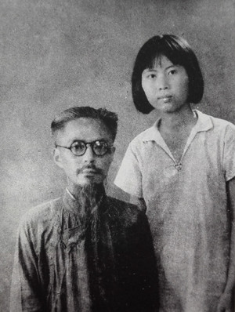
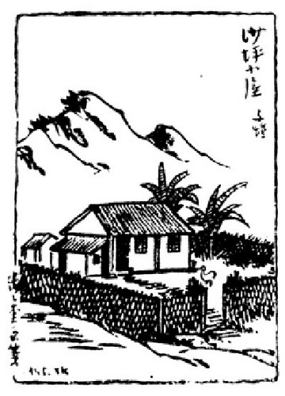
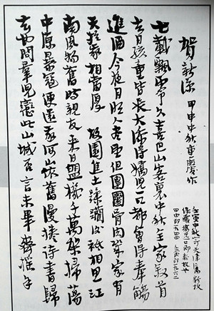
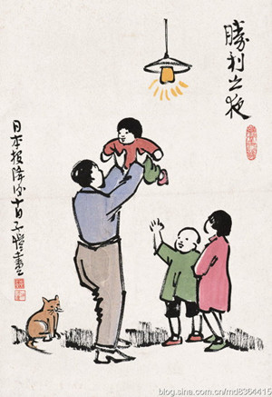

名人笔下的重庆（一）：丰子恺之《谢谢重庆》
丰子恺（1898—1975），浙江桐乡人，著名漫画家。1942年11月，丰子恺带领全家来到重庆沙坪坝，任国立艺术专科学校教授兼教务主任。1942年暑假后，他辞去艺专教职，在重庆沙坪坝庙湾租地自建一座简陋小屋，命名为“沙坪小屋”，全家在此定居。这一时期，他积极投入战时重庆文化界的抗日文化活动，创作了大量反映抗战和大后方人民生活的诗画作品，如《蜀江山碧蜀水青》《纤夫》《落红不是无情物，化作春泥更护花》等。抗战后期，丰子恺到泸县、自流井、乐山、长寿、涪陵、南充、内江等地游历，并开办画展。1945年，《子恺漫画全集》出版。1946年4月，举家离开重庆。

1944年夏天，丰子恺与幼女丰一吟在重庆留影。

丰子恺创作的漫画《沙坪小屋》
在重庆居住的三年多时间里，丰子恺及其家人从“不恋山城”发展到“谢谢重庆”。初到重庆时，丰子恺思念家乡，曾在沙坪小屋写下一首小诗，称“漫卷诗书归去时，问群儿恋此山城否，言未毕，其摇手。”并贴在墙上，天天观赏，企盼还乡。抗战胜利后，长久期盼的回乡日真的到了，重庆城的友好、安逸却已经让丰子恺难以割舍。不单丰子恺本人，他的儿女们也各自在重庆找到了自己的事业和爱情。这时候，丰子恺重读那首小诗，觉得“无以为颜”。只得苦笑着说自己填错了词，应该是“言未毕，齐点首。”犹豫踌躇多日，终究还是思乡情占了上风。1946年4月，丰子恺卖掉了沙坪小屋，合家迁居到凯旋路等待归舟。临别之际，朝天门在视线里渐行渐远，三年来的苦闷、颓唐、喜悦、安慰一一闪现，丰子恺百感交集，最后汇成四字：“谢谢重庆”！
本期为大家带来丰子恺的文章《谢谢重庆》。
抗战胜利前一年，民国三十三（公元1944）年的中秋，我住在重庆沙坪坝的“抗建式”小屋内。当夜月明如昼，我家十人团聚。我庆喜之余，饮酒大醉，没有赏月就酣睡了。次晨醒来，在枕上填一曲打油词。其词曰：
七载飘零久。喜中秋巴山客里，全家聚首。去日孩童皆长大，添得娇儿一口。都会得奉觞进酒。今夜月明人尽望，但团圆骨肉几家有？天于我，相当厚。故园焦土蹂躏后，幸联军痛饮黄龙，快到时候。来日盟机千万架，扫荡中原暴寇。便还我河山依旧。漫卷诗书归去也，问群儿恋此山城否？言未毕，齐摇手。（贺新凉）
我向不填词，这首打油词，全是偶然游戏；况且后半夸口狂言，火气十足，也不过是“抗战八股”之一种而已，本来不值得提及。岂知第二年的中秋，我国果然胜利。我这夸口狂言竟成了预言。我高兴得很，三十四年八月十日后数天内，用宣纸写这首词，写了不少张，分送亲友，为胜利助喜，自己留下一张，贴在室内壁上，天天观赏。


丰子恺创作的漫画《胜利之夜》
起初看壁上的词，读读后面一段，觉得心情痛快。后来越读越不快了。过了几个月，我把这张字条撕去，不要再看了！为甚么原故呢？因为最后几句，与事实渐渐发生冲突，使我读了觉得难以为情。
最后几句是“漫卷诗书归去也，问群儿恋此山城否？言未毕，齐摇手。”岂知胜利后数月内，那些“劫收”的丑恶，物价的飞涨，交通的困难，以及内战的消息，把胜利的欢喜消除殆尽。我不卷诗书，无法归去；而群儿都说：“还是重庆好。”在这情况之下，我重读那几句词句，觉得无以为颜。我只得苦笑着说，我填错了词，应该说：“言未毕，齐点首。”
做人倘全为实利打算，我是最应该不复员而长作重庆人的。因为一者，我的故乡石门湾，二十六（1937年）冬天就被敌人的炮火改成一片焦土。我的缘缘堂以及其他几间老屋和市房，全部不存，我已无家可归。而在重庆的沙坪坝，倒有自建的几间“抗建式”小屋，可蔽风雨。二者，我因为身体不好，没有担任公教职员，多年来闲居在重庆沙坪坝的小屋里卖画为生，没有职业的牵累，全无急急复员的必要。我在重庆，在上海，一样地是一个闲人。何必钻进忙人里去赶热闹呢？三者，我的子女当时已有三个人成长，都在重庆当公教人员。他们没有家室，又不要担负父母的生活，所得报酬，尽可买书买物，从容自给。况且四川当局曾有布告，欢迎下江教师留渝，报酬特别优厚。为他们计，也何必辛苦地回到“人浮于事”的下江去另找饭碗呢？——从上述这三点打算，我家是最不应该复员而最应该长作重庆人的。
不知道一种什么力，终于使我厌弃重庆，而心向杭州。不知道一种什么心理，使我决然地舍弃了沙坪坝的衽席之安，而走上东归的崎岖之路。明知道今后衣食住行，受一切的困苦；明知道此次复员，等于再逃一次难；然而大家情愿受苦，情愿逃难，拼命要回到杭州。这是什么原故？自己也不知道。想来想去，大约是“做人不能全为实利打算”的原故吧。全为实利打算，换言之，就是只要便宜。充其极端，做人全无感情，全无意气，全无趣味，而人就变成枯燥、死板、冷酷、无情的一种动物。这就不是“生活”，而仅是一种“生存”了。古人有警句云：“不为无益之事，何以遣有涯之生？”（清项忆云语）这句话看似翻案好奇，却含有人生的至理。无益之事，就是不为利害打算的事，就是由感情、意气、趣味的要求而做的事。我的去重庆而返杭州，正是感情、意气、趣味的要求，正是所谓“无益之事”。我幸有这一类的事，才能排遣我这“有涯之生”。
“漫卷诗书归去也，问群儿恋此山城否？言未毕，齐摇手。”其实并非厌恶这山城，只是感情、意气、趣味所发生的的豪语而已。凡人都爱故乡。外国语有 nostalgia一语，译曰“怀乡病”。中国古代诗文中，此病尤为流行。“去国怀乡”，自古叹为不幸。今后世界交通便捷，人的生活流动，“乡”的一个观念势必逐渐淡薄，而终至于消灭；到处为家，根本无所谓“故乡”。然而我们的血管里，还保留着不少“怀乡病”的细菌。故客居他乡，往往要发牢骚，无病呻吟。尤其像我这样，被敌人的炮火所逼，放逐到重庆来的人，发点牢骚，正是有病呻吟。岂料呻吟之后，病居然好了，十年不得归去的故乡，居然有一天可以让我归去了！因此上，不管故园已成焦土，不管交通如何困难，不管下江生活如何昂贵，我一定要辞别重庆，遄返江南。
重庆的临去秋波，非常可爱！那正是清和的四月，我卖脱了沙坪坝的小屋，迁居到城里凯旋路来等候归舟。凯旋路这名词已够好了，何况这房子站在山坡上，开窗俯瞰嘉陵江，对岸遥望海棠溪。水光山色，悦目赏心。晴明的重庆，不复有警报的哭声，但闻“炒米糖开水”“盐茶鸡蛋”的节奏的叫唱。这真是一个可留恋的地方。可惜如马一浮先生所说：“清和四月巴山路，定有行人忆六桥。”我苦忆六桥，不得不离开这清和四月的巴山而回到杭州去。临别满怀感激之情！数年来全靠这山城的庇护，使我免于被发左衽，谢谢重庆！